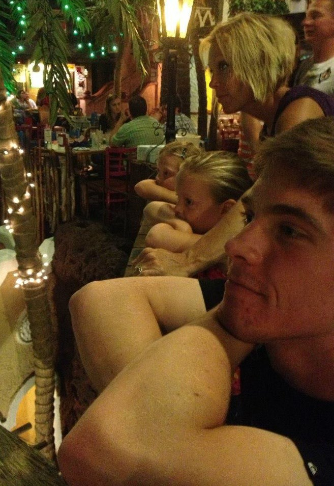

> Walk Through May 5th, 2014
To celebrate school being out, I bought myself the new Creative Cloud Suite by Adobe. Here is the first piece with the new software!
To celebrate school being out, I bought myself the new Creative Cloud Suite by Adobe. Here is the first piece with the new software!
Wow, what a busy couple of weeks back to school! I've got two new websites I'm working on as class projects that will be receiving updates often, definitely give them a look! Digital Media 2 and Digital Sound! But as an added bonus, I'd like to show you my Digital Media 1 Portal as well! All of these websites were made by myself for my classes in the Technology, Arts & Media program here at CU. Enjoy!
I've finally started to consolidate my photographs, many of which I took this Winter Break when I was home in Bozeman, Montana. I've got a couple of them uploaded to the Photography Page. I'll be adding some descriptions to each photo soon. Check back soon!
Hello! Thanks for visiting my website! The site is still very much under construction, but today I am excited to offer a very barebones version for those of you who just can't wait! I'll be posting updates frequently (a New Year's Resolution!) so STAY TUNED!
 My name is Dillon Drenzek. I am currently a 4th-year (out of 5) student at the University of Colorado in Boulder. I recently discovered my interest in "Digital Creativity" as I like to call it. I love creating art in the digital domain. This includes static visual art using Adobe Photoshop and Illustrator, motion picture art using Autodesk Maya, Adobe Premiere Pro, After Effects, as well as audio art using programs like Ableton Live, Propellerhead's Reason, and the open-source Audacity. I consider myself a Jack of all trades, but whatever the flavor of the week happens to be, I try to completely commit myself to making the best end-product possible. Everything you see before you is all original and while I have a working knowledge in all the programs listed above, I definitely haven't learned all I'd like to. This will be a lifelong process.